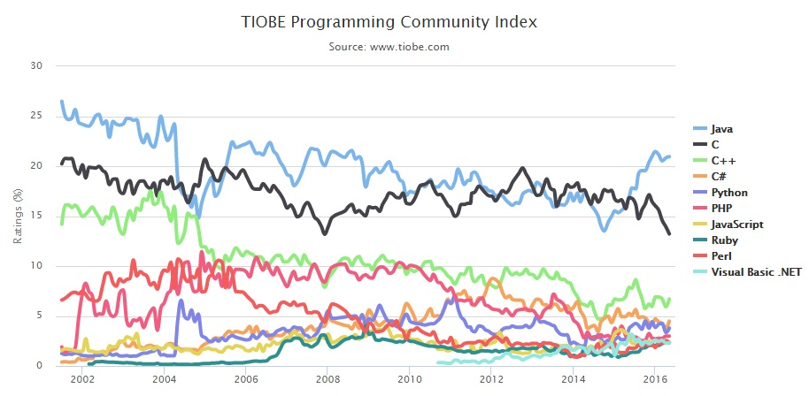

Introducción a Java

Java es...
- De propósito general
- Seguro
- Portable ("Write Once, Run Anywhere")
- Orientado a Objetos
- Multihilo
#1 in the world
¿Java es compilado o interpretado?


The "Hello World!" Application
Preguntas

System.exit(0);